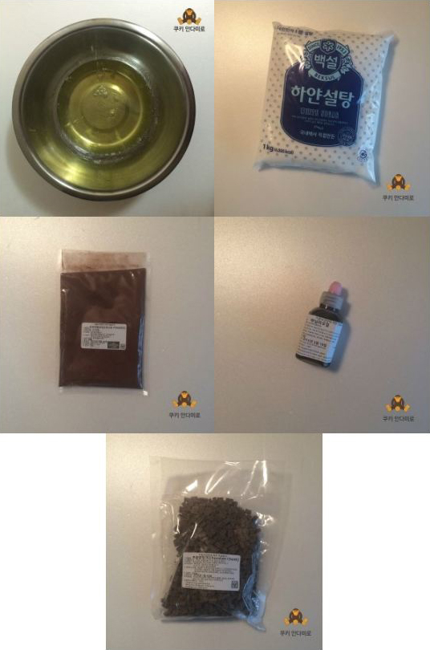
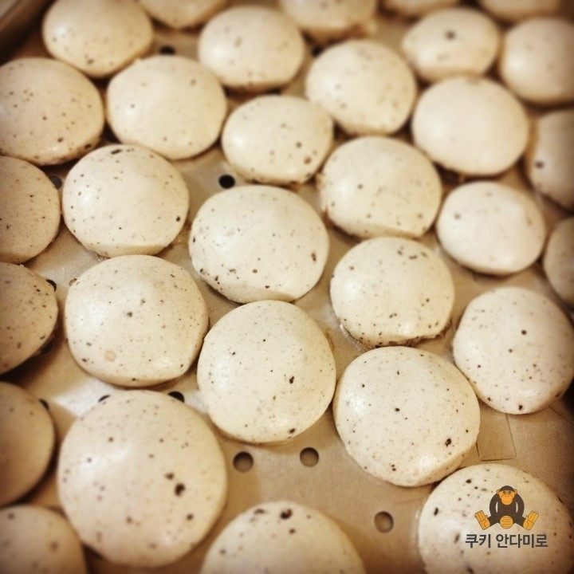
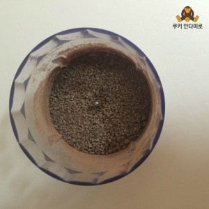
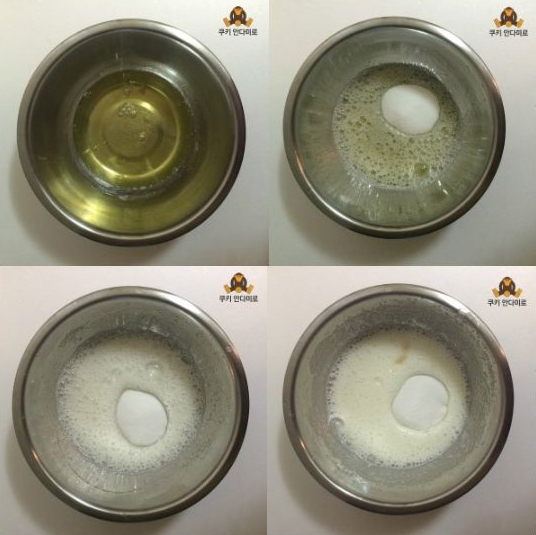
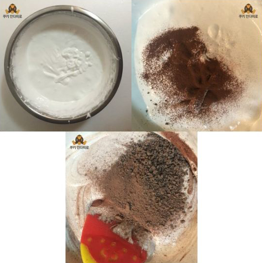
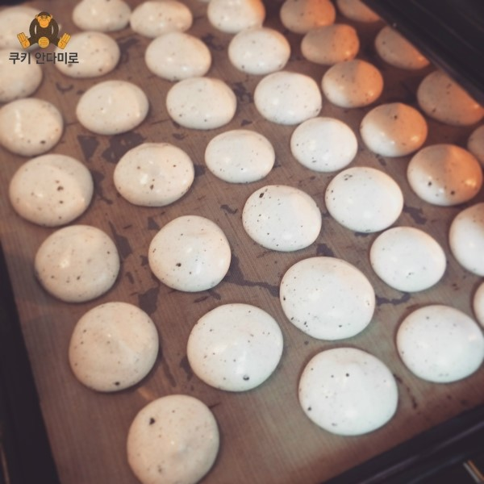

분량머랭 20개 정도 분량
재료계란 흰자 2개
설탕 100g
코코아가루 2tb
바닐라 에센스 1~2방울
초코칩 40g
계란은 실온에서 1시간 이상 나둔 뒤 사용합니다.

MERINGUE프렌치 머랭 쿠키 만들기

이름하여, 초콜렛이 촘촘히 박힌 프렌치 머랭 쿠키 입니당 ㅎ
이번에 만들어 볼 머랭은 프랜치 머랭이에요 ~
따뜻한 시럽을 넣고 만드는 이탈리아 머랭과는 조금 레시피가 다르답니다 ~
이번에 만들어 볼 머랭은 프랜치 머랭이에요 ~
따뜻한 시럽을 넣고 만드는 이탈리아 머랭과는 조금 레시피가 다르답니다 ~
우선 초코칩은 믹서기로 갈아주세요 ~
알갱이 크기가 쌀알갱이 반 정도 크기면 됩니다.

알갱이 크기가 쌀알갱이 반 정도 크기면 됩니다.
계란 흰자를 휘핑기로 가볍게 휘핑해줍니다.
차가운 계란 흰자는 거품이 잘 오르지 않아요 ~ 흰자를 따뜻하게 해줄수록 휘핑이 잘 쳐진답니다 ㅎ

차가운 계란 흰자는 거품이 잘 오르지 않아요 ~ 흰자를 따뜻하게 해줄수록 휘핑이 잘 쳐진답니다 ㅎ
설탕을 최대한 여러번 분리해서 넣어주며 계속 거품기로 휘핑해줍니다.

짤주머니에 넣어 푹푹 짜주었답니다 ㅎ
못난이 머랭들이에요 ~
120도로 예열된 오븐에 50분간 구워주면 완성!!
잘 구워진 머랭이에요 ~

못난이 머랭들이에요 ~
120도로 예열된 오븐에 50분간 구워주면 완성!!
잘 구워진 머랭이에요 ~
그냥 일회용 짤주머니에 넣어 모양 없이 짜주었더니 조약돌 모양처럼 나왔네요 ㅎ
담엔 예쁘게 모양을 내보도록... 흑흑 ㅋ
사르르 녹는 머랭에 촘촘히 초콜렛이 박혀 있어 씹는 재미도 있고~
맛있는 머랭쿠키랍니다!
목록으로 가기
담엔 예쁘게 모양을 내보도록... 흑흑 ㅋ
사르르 녹는 머랭에 촘촘히 초콜렛이 박혀 있어 씹는 재미도 있고~
맛있는 머랭쿠키랍니다!